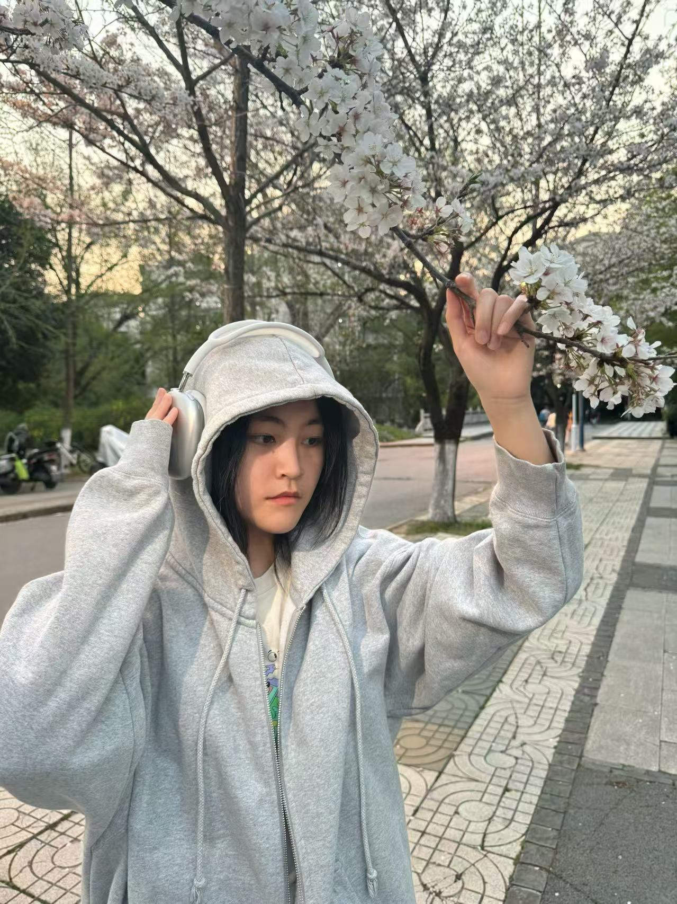

Hi there, I'm Xiangyi Jian 👋
Passionate about education, course design, and creating meaningful learning experiences.
A little about me
Experienced in educational practice, course design, and activity organisation through teaching practice and education-related projects. Skilled in lesson preparation, activity planning, resource development, and teamwork. Detail-oriented, responsible, and effective in communication and coordination, with the ability to respond flexibly to on-site needs and support smooth project delivery.
Three things I love
Photography
Capturing golden-hour light, quiet street moments, and the little details that make a place feel like home.
Coffee & Books
There's nothing better than a slow morning with a pour-over and a novel that makes me forget the time.
Cooking
Experimenting with flavors and turning simple ingredients into comforting meals — the messier the kitchen, the better.
A few of my favorite things
- 🎬 Movie: Green Book — a heartfelt story about friendship and humanity that stays with you long after the credits roll.
- 🎵 Song: "Eternal Sunshine" — a dreamy, soulful track that feels like floating on a quiet afternoon.
- 🐾 Animal: Shiba Inu — curious, spirited, and impossibly cute with that iconic fox-like smile.